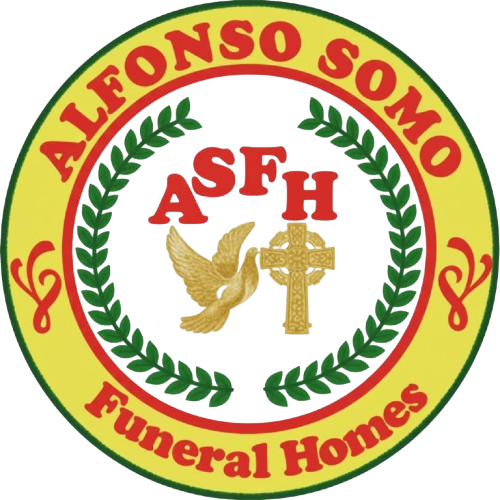

Last Updated: June 2026
By accessing and using the Alfonso Somo Funeral Homes website and services, you agree to comply with these Terms of Use. If you do not agree with any part of these terms, please discontinue use of the website.
This website provides information about funeral services, packages, memorial arrangements, payment options, and customer support offered by Alfonso Somo Funeral Homes.
Users may create an account to access certain features of the website. You are responsible for maintaining the confidentiality of your account credentials and for all activities conducted under your account.
Service requests submitted through the website are subject to review, verification, and confirmation by Alfonso Somo Funeral Homes. Submission of a request does not automatically guarantee service availability.
Prices displayed on the website are for informational purposes only and may not reflect the final contract price. The final amount will depend on the selected package, requested services, materials, and other applicable charges, and will be confirmed before the agreement is finalized.
Families may request customized funeral services. Additional charges may apply depending on the selected materials, floral arrangements, vehicles, and other requested services.
Users agree not to:
All content, logos, images, text, and design elements displayed on this website are the property of Alfonso Somo Funeral Homes and may not be copied, reproduced, or distributed without permission.
Alfonso Somo Funeral Homes strives to provide accurate information; however, we do not guarantee that all website content is free from errors. We shall not be liable for any damages resulting from the use of this website.
Personal information collected through the website is handled in accordance with our Privacy Policy and applicable data protection laws.
Alfonso Somo Funeral Homes reserves the right to update or modify these Terms of Use at any time. Continued use of the website constitutes acceptance of any revised terms.
For questions regarding these Terms of Use, please contact:
Alfonso Somo Funeral Homes
Brgy. Naslo, Maasin, Iloilo, Philippines
Phone: +63 919 273 4055